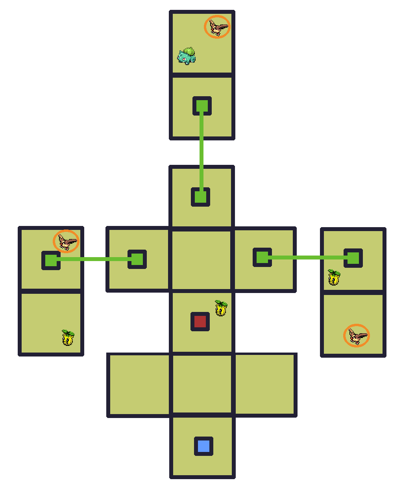

Gauge


Check out WarriorGallade's post on this Mission for more specific tips.
| Rank | AP | Slates |
|---|---|---|
| S | 5 | Sandshrew (90%) Sandslash (10%) |
| A | 4 | Sunkern (100%) |
| B | 3 | N/A |
| C | 2 | N/A |
Wild Pokémon in this Mission do not drop Slates.
| Pokémon | Quantity | Group | Friendship Gauge |
AP | |
|---|---|---|---|---|---|
|
|
Bulbasaur | 1 | Grass | 180 | 1 |
|
|
Pidgey | 3 | Flying | 64 | 1 |
|
|
Sunkern | 3 | Grass | 48 | 1 |
| Pokémon | Group | Friendship Gauge |
Agitated Gauge |
AP | |
|---|---|---|---|---|---|
 |
Sandslash | Ground | 420 | 50 | 3 |
Text of this section & map image are taken from WarriorGallade's post on the subject, supplemented with information from the official Prima guide book, and condensed/reorganized slightly. Used with permission.

Legend:
This has a similar layout to the last mission, but introduces teleporters for the first time. There are exactly three Sunkern, all of which need to be captured: one in the central chamber and one in each of the west and east teleporter destinations. This is the first encounter with angry Pokémon (Pidgey in this mission), which chase you and force you to capture them if they catch you, costing time. Although these Pidgey are easy to avoid, later angry Pokémon will not be.
Note that there is no reason to go to the top teleporter unless you want to grind AP on this mission.
A step up in difficulty from the last boss. Sandslash slowly regenerates HP if you go 4+ seconds without looping around it. Regeneration is uncapped, so hesitation can wipe out all your progress. Every future boss shares this trait, and it's brutal on some of them. Like Drapion, Sandslash becomes agitated at ~50% HP.
Sandslash's attacks are:
Somewhat tough on your first attempt, but Piplup's type advantage and slowing effect help a lot. Save assists for when Sandslash is agitated, and protect Piplup from attacks: without upgraded recovery time, any hit can cost you the rank. A few extra levels make this considerably easier.
Stick with Piplup. Totodile and Chikorita may be available but aren't worth using: Totodile requires precise aim and lacks a secondary effect (generally avoid Poké Assists without a secondary effect or good range, regardless of raw power), while Chikorita's slow effect is close-range, making it both harder to land and riskier to use. Piplup's long-range bubbles and slowing effect remain the better choice.